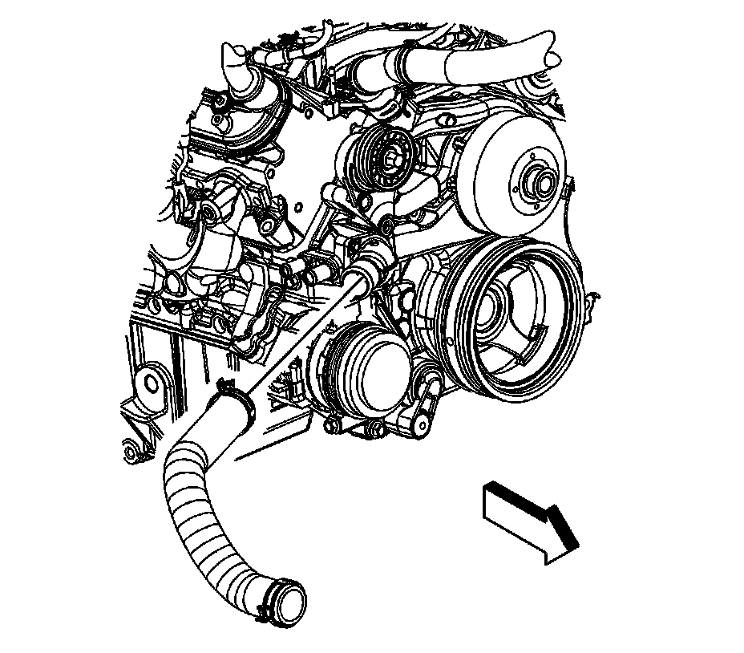

Thermostat Housing: Service and Repair
Engine Coolant Thermostat Housing Replacement
Removal Procedure

1. Drain the cooling system. Refer to Draining and Filling Cooling System (Vac-N-Fill).
2. Remove the air cleaner outlet duct.
3. Reposition the radiator outlet hose clamp at the water pump inlet.
4. Remove the radiator outlet hose from the water pump inlet.
5. Remove the water pump inlet bolts.
6. Remove the water pump inlet from the water pump.
7. Remove and discard the water pump inlet seal.
Installation Procedure
1. Install a NEW water pump inlet seal to the water pump inlet.
2. Position the water pump inlet to the water pump.
Notice: Refer to Fastener Notice.
3. Install the water pump inlet bolts.
Tighten the bolts to 15 N.m (11 lb ft).
4. Install the radiator outlet hose to the water pump inlet.
5. Position the radiator outlet hose clamp at the water pump inlet.
6. Install the air cleaner outlet duct.
7. Fill the cooling system. Refer to Draining and Filling Cooling System (Vac-N-Fill).